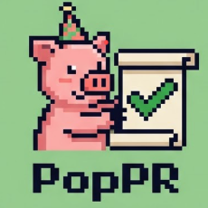

PopPR
Pop quiz for the pull request you just shipped.
Public repositories. Nothing is uploaded and no account is needed.
For private repositories, run it in your terminal:
npx @quokkapride/poppr
Reading the diff
Hard questions are worth 3.5x. Speed and streaks multiply.
This repo requires a passing quiz, so the clock only scores you. You cannot fail. Afterwards every question has to be answered correctly: no clock, no limit on tries, and you cannot fail it.
Answer with A, B, C, D or click.
Share
Open the PRNo clock, no points. Answering again is what makes it stick.
No clock and no limit on tries. How many it takes is never published.
Missed concepts come back on a future PR.
GitHub did not return the head commit for this pull request, so the comment
cannot be bound to it. Certify from your terminal instead:
npx @quokkapride/poppr --certify
Paste this as a comment on the PR and the poppr/quiz-passed check turns green.
A new push resets the check, because the diff it answered for is gone.